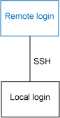
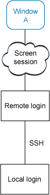
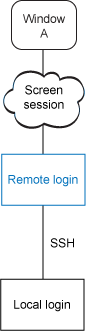
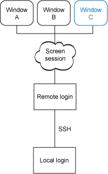
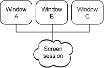
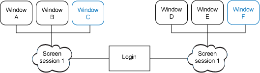
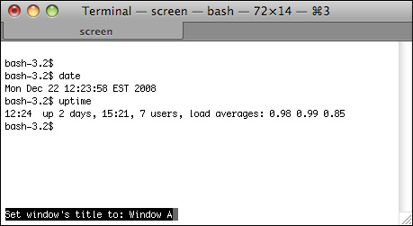
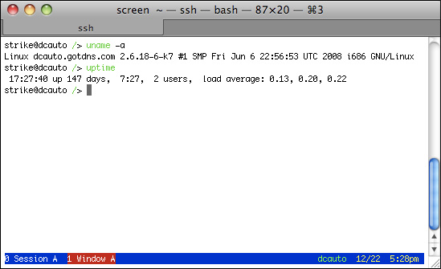
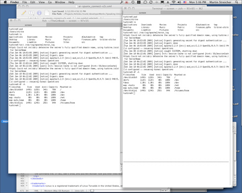

在 IBM Bluemix 云平台上开发并部署您的下一个应用。
哈利波特有魔杖，雷神托尔有金色的巨锤，Buckethead 有斧子，但是这些武器与 QWERTY 键盘相比只是小儿科。只需在命令行上敲几下，就可以启动网站、招募军团或击败可怕的火龙。
但是，QWERTY 键盘有一个严重的缺点：它很容易发生连接中断。电话线上的噪音、无线连接中断或者网络超时都可能导致远程 shell 中断。如果您已经在某个工作（比如调试一个应用程序）上花费了好几小时，而一下子就丢失了所有成果，一定会很沮丧的。
不过这种灾难是可以避免的。使用 GNU Screen 就可以了。Screen 可以在一个控制台（即与主机物理连接的哑终端）、xterm 窗口或 Secure Shell (SSH) 登录 shell 中创建和管理多个 shell 窗口。可以从一个 shell 窗口迅速切换到另一个窗口，可以离开正在运行的 shell 并在任何时候重新连接。实际上，Screen 提供许多虚拟化的控制台。
图 1 到图 5 展示 Screen 的特性和操作。看一下 图 1，这里假设用户已经使用 SSH 登录到一台远程主机。最初，在本地主机（比如您的笔记本或桌面计算机）上有一个本地 shell 和一个远程 shell。通常，使用远程 shell 在远程主机上运行命令；输出经过加密之后通过 SSH 连接发送到本地 shell。（在各张图中，用蓝色表示当前可见的 shell 输出）。但是，如果本地 shell 或远程 shell 或它们之间的连接中断了，远程 shell 就会终止，您的工作成果就会丢失。
图 1. 典型的 SSH 连接
图 2 显示在远程主机上启动 Screen 之后的情况。Screen 实用程序启动，进而启动一个新的 shell 窗口 A，可以在此窗口中运行命令。A 的输出是可见的（由蓝色表示）；这个 shell 的输出经过 Screen，再经过远程登录 shell，最后通过 SSH 到达本地登录 shell。
图 2. Screen 管理 shell 窗口
Screen 本身并不 “露面”；它是一个代理，其作用是在它管理的正在运行的可用窗口中做出选择。在任何时候，Screen 只能显示一个窗口的输出。可以把 Screen 看作虚拟的键盘-视频-鼠标 (KVM) 开关。
但是，也可以断开与 Screen 的连接，见 图 3。Screen 代理仍然存在，它控制的所有窗口也还存在，但是与 Screen 的连接临时切断了，这会让用户返回到远程登录 shell。
图 3. 可以断开与 Screen 的连接，而它管理的窗口仍然存在
图 4 显示一种可能出现的情况。已经重新建立了到 Screen 的连接，还创建了另外两个窗口（B 和 C）。窗口 A 和 B 继续运行 shell 和所有附属作业，但是只有 C 的输出是可见的。当然，可以在窗口之间切换以监视各个作业的状态。
图 4. Screen 可以管理多个窗口
最后，图 5 显示中断与 Screen 的连接并终止远程登录 shell 的情况。Screen 和它的窗口仍然存在。可以重新登录并连接 Screen（并通过 Screen 代理连接到它的窗口），继续您的工作。
图 5. 可以随意中断与 Screen 的连接和重新连接
如果您常常要访问远程服务器以执行维护或开发软件，那么 GNU Screen 是必不可少的工具。
构建并安装 Screen
Screen 的最初版本早在 10 多年前就发布了，所以您的系统上很可能有这个实用程序（通常名为 /usr/bin/screen）。但是，如果系统上没有 Screen，也很容易通过发行版的包管理器安装它。例如，如果您使用 Debian Linux® 的变体（比如 Ubuntu），那么可以用 apt-get 简便地安装 Screen：
$ sudo apt-get install screen
另外，如果您喜欢从源代码构建软件，可以访问 GNU Screen 项目页面（见 参考资料 中的链接）并下载最新的代码包。在撰写本文时，Screen 的最新版本是 4.0.3，于 2008 年 8 月发布。下载并提取代码，进入生成的源代码目录，然后依次运行 ./configure、make 和 sudo make install：
$ wget http://ftp.gnu.org/gnu/screen/screen-4.0.3.tar.gz $ tar xzf tar xzf screen-4.0.3.tar.gz $ cd screen-4.0.3 $ ./configure this is screen version 4.0.3 ... $ make CPP="gcc -E " srcdir=. sh ./osdef.sh ... $ sudo make install ... You may also want to install ./etc/etcscreenrc in /usr/etc/screenrc. $ sudo cp ./etc/etcscreenrc /usr/etc/screenrc
Screen 现在就安装好了，可以使用了。输入 man screen 查看 Screen 的手册页。
开始使用 Screen
启动 Screen。在出现许可协议消息时，按 Return；现在应该会看到一个新的登录 shell 提示。（在下面的清单中，在每个 shell 提示前面人为地添加一个昵称，以此区分各个 shell 实例并与图 1 到图 5 联系起来） 。
Local $ ssh remote.example.com Last login: Sun Dec 21 17:23:16 2008 from local.example.com Remote $ hostname remote.example.com Remote $ screen A $ top
现在处于 图 2 所示的状态。一个 Screen 会话正在运行（尽管看不到），窗口 A 处于活动状态，它正在运行系统监视器 top，每隔几秒刷新一次系统性能信息。
为了临时断开与 Screen 会话及其所有窗口的连接，按 Ctrl-a，然后按 d（小写的字母 D，代表 “detach”）。Ctrl-a 是 Screen 命令的前缀，d 是用于断开连接的命令。现在处于 图 3 所示的状态。Screen 会话和窗口 A 仍然存在。可以通过运行 screen -list 确认这一点：
$ screen -list There is a screen on: 21020.pts-2.remote (Detached) 1 Socket in /tmp/screens/S-strike.
screen -list 命令显示所有可用的 Screen 会话。（顺便说一句，可以同时运行多个 Screen 会话，每个会话有一组同时运行的窗口。图 6 显示这种情况。每个 Screen 实例跟踪它自己的当前窗口。稍后会提供一些关于 Screen 的高级用法的提示）。编号为 21020 的会话已经断开连接并相应地加上了标志。因为只有一个 Screen 会话，所以可以直接用 screen -r 重新连接它。由于运行了 Screen，top 会一直运行。
图 6. Screen 提供多个会话，每个会话有多个窗口
为了进入 图 4 所示的状态，重新连接当前会话，然后按 Ctrl-a，然后按 c（小写的字母 C，代表 “create”）创建一个新窗口。接下来，按 Ctrl-a，然后再次按 c。现在，Screen 会话管理三个窗口。
按 Ctrl-a，然后在当前窗口中按双引号键（"），就可以看到会话中可用窗口的列表：
Num Name Flags 0 bash $ 1 bash $ 2 bash $
在默认情况下，窗口的名称取自它启动的第一个命令（通常是一个 shell）。因此，在上面的列表中有三个 bash 窗口。可以用箭头键在窗口列表中上下移动；只需按回车即可选择窗口。
终止当前窗口的方法是，在窗口的 shell 提示上输入 exit，或者按键盘快捷键 Ctrl-a，然后按 k（小写的字母 K，代表 “kill”）。如果使用后一种方法，那么在窗口底部会出现一个警告，要求您确认要杀死此窗口。按 y（小写的字母 Y，代表 “yes”）确认，或按 n（小写的字母 N，代表 “no”）拒绝。如果杀死一个 Screen 会话中运行的所有窗口，屏幕命令就会输出一个消息并终止：
Remote $ screen ... Create and manipulate windows ... ... Exit from all windows... [screen is terminating] Remote $ screen -list No Sockets found in /tmp/uscreens/S-supergiantrobot.
如果杀死了所有打开的窗口，那么 screen -list 命令输出 No sockets...，表示没有 Screen 会话可用。
更智能化的屏幕
到目前为止，已经看到了如何在一个 Screen 会话中创建多个窗口。只需这么做，就足以确保命令行工作不会丢失。
但是坦率地说，由于同时运行多个看起来相同的窗口，管理时可能引起混乱。最好能够轻松地区分窗口，而不需要逐一打开每个窗口。如果在断开连接和重新连接之间间隔的时间比较长的话，这种特性尤其有意义。
实际上，Screen 提供了许多选项和工具来帮助定制您的工作环境。可以给每个窗口指定名称，还可以在每个窗口的底部显示一个状态栏以帮助区分窗口。
指定窗口名称的方法是，激活窗口，按 Ctrl-a A（大写的字母 A，代表 “Annotate”），根据需要按 Backspace 删除现有的名称，然后在提示上输入一个有意义的名称：
Num Name Flags 0 Window A $ 1 Window B $ 2 Window C $
在 图 7 中，窗口的标题被设置为 Window A。窗口的昵称不必是惟一的。
图 7. 可以给每个窗口指定描述性的名称
可以使用状态栏在视觉上进一步区分各个窗口。启动您喜欢的文本编辑器，在主目录中创建包含以下代码的 .screenrc 文件：
hardstatus on
hardstatus alwayslastline
hardstatus string "%{.bW}%-w%{.rW}%n %t%{-}%+w %=%{..G} %H %{..Y} %m/%d %C%a "创建这样的 .screenrc 配置文件之后，每个新窗口就会显示状态栏，其中包含窗口的名称。图 8 显示一个包含状态栏的窗口。
图 8. 使用状态栏帮助识别每个窗口
有帮助的 Screen 提示
Screen 的特性非常多，无法在这里一一介绍。下面给出一些提示并介绍几个比较有用的选项，帮助您更顺畅地使用 Screen：
- 在任何窗口中输入
screen，不带任何参数，就会打开一个新窗口。按 Ctrl-a，然后按 c 与输入screen的作用相同，差异只是后一种方式通过提供命令行选项立即配置新会话。 - 可以使用
screen -t name命令在创建窗口时指定窗口名称。例如，要想创建一个新窗口并把它命名为 debugger，只需进入 Screen 管理的一个窗口，然后输入screen -t debugger。如果打开窗口列表，其中一个窗口的标签应该是 debugger。 - 如果已经断开了与 Screen 会话的连接，可以用
screen -p ID命令重新连接特定的窗口，其中的 ID 是一个数字或名称。我们来试一下：Local $ ssh remote.example.com Remote $ screen -t ghost Ghost $ screen -t new New $ ... Press Control-a d to detach... Remote $ screen -r -p ghost Ghost $
- 可以用
screen -L命令把每个窗口的输出记录在日志中。每个窗口有自己的日志文件，文件名通常是 ~/screenlog.n，其中的 n 是窗口列表中显示的窗口编号。这个特性对于记录复杂的步骤（比如重新配置系统）非常有帮助。 - 在 Screen 文档中记录了所有快捷键。最有用的组合键包括：按 Ctrl-a，然后按 0（数字零）到 9 立即切换到特定的窗口；按 Ctrl-a，然后按 C（大写的字母 C，代表 “Clear”）清除一个窗口的内容；按 Ctrl-a，然后按 H 启用或禁用日志记录；按 Ctrl-a，然后按 Ctrl-a 在当前窗口和前一个窗口之间来回切换；按 Ctrl-a，然后按 Ctrl-\（反斜杠）杀死所有窗口并终止当前的 Screen 会话。
Screen 的高级用法
正如前面提到的，可以创建多个同时运行的 Screen 会话，每个会话可以管理一系列窗口。每个会话有一个惟一标识符；使用 screen -list 列出可用的所有会话。与窗口一样，可以给会话指定名称以便引用它。使用 screen -S label 给新会话分配标签。
共享是 Screen 会话的最佳用法之一。如果允许，可以连接现有的会话并在此会话的任何窗口中与其他用户协作。甚至可以独立地切换到会话中的另一个窗口。如果您与其他用户在同一窗口中，输入或显示的任何内容都会反映给所有伙伴。我们来试一下：
- 选择一台工作计算机并登录。
- 输入
screen -S sharing -t one创建一个名为 sharing 的 Screen 会话和一个名为 one 的新窗口。 - 用
screen -t two创建另一个窗口。 - 如果愿意，检查一下目前的状态：按 Ctrl-a，然后按 d，然后输入
screen -list和screen -r sharing，然后按 Ctrl-a，然后按 "。 - 在 one 窗口中输入
echo，在此窗口中产生一些输出。 - 在同一台计算机上，打开第二个登录窗口。
- 在此窗口中，输入
screen -x -r sharing -p one。-x选项指定多用户模式；-p one直接连接到 one 窗口。应该会马上看到与另一个登录会话相同的输出，见 图 9。图 9. 可以共享会话

在每个登录窗口中，运行 UNIX® 命令产生输出，按 Screen 快捷键在共享的会话中的窗口之间切换并查看结果。
结束语
要想进一步掌握 Screen，可以研究一下多屏幕模式，学习如何用老式的锁防止对各个窗口的访问。
Screen 是一个很实用的工具，它对于在命令行上执行的任何工作都很有价值。实际上，一旦掌握了它，您就会觉得离不开它了。
参考资料
学习
- 对话 UNIX：阅读本系列中的其他文章。
- 了解关于 UNIX shells 的更多信息。
- AIX and UNIX 专区：developerWorks 的“AIX and UNIX 专区”提供了大量与 AIX 系统管理的所有方面相关的信息，您可以利用它们来扩展自己的 UNIX 技能。
- AIX and UNIX 新手入门：访问“AIX and UNIX 新手入门”页面可了解更多关于 AIX 和 UNIX 的内容。
- AIX and UNIX 专题汇总：AIX and UNIX 专区已经为您推出了很多的技术专题，为您总结了很多热门的知识点。我们在后面还会继续推出很多相关的热门专题给您，为了方便您的访问，我们在这里为您把本专区的所有专题进行汇总，让您更方便的找到您需要的内容。
- 在 技术书店 浏览关于这些主题和其他技术主题的图书。
获得产品和技术
- 下载 Screen 的源代码。
讨论
- 通过加入 Screen 邮件列表，获得提示和技巧。
- 参与 developerWorks blogs 并加入 developerWorks 社区。
- 参与 AIX 和 UNIX 论坛：
条评论
快来添加第一条评论 |

IBM Bluemix 资源中心
文章、教程、演示，帮助您构建、部署和管理云应用。

developerWorks 中文社区
立即加入来自 IBM 的专业 IT 社交网络。

Bluemixathon 挑战赛
为灾难恢复构建应用，赢取现金大奖。
请 登录 或 注册 后发表评论。
注意：评论中不支持 HTML 语法